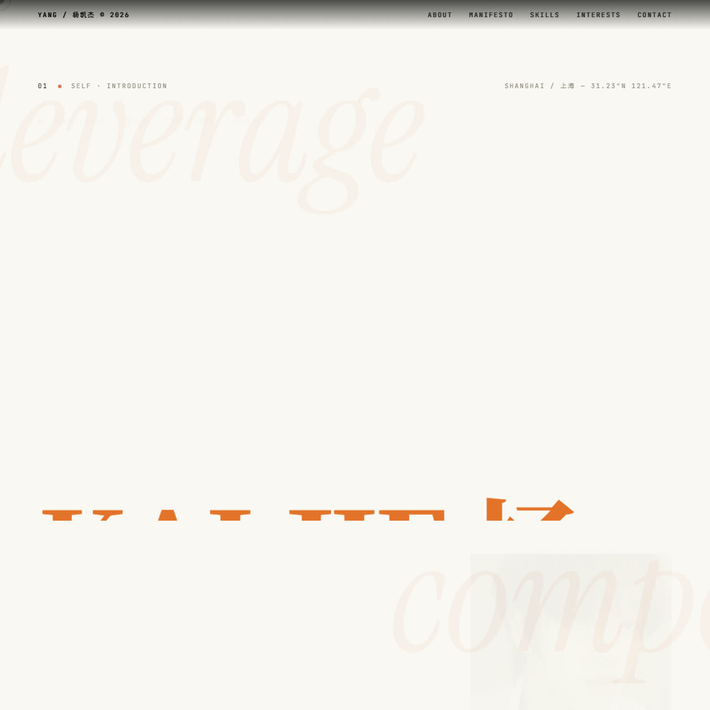

WEB OUTPUT
母亲节祝福网页
一句祝福不该停在聊天框里，而是被交付成一个可以打开、滚动、转发的动态网页。

LIVE INPUT
一句模糊需求进入系统，出口不是建议，而是网站、视频、写真、知识库、选题库和可复用技能。
FIRST EDUCATION · STUDENT AI ARCHIVE
树成林 全国最大的大学生 AI 社群00.5 任务调度台
不只展示结果，还把“这句话会流向哪条产线”讲清楚。切一下，右侧就切到对应交付。
01 产线分流
网站、视频、写真、歌。每一件，都是用 AI 当场做出来的。
01.5 品牌揭示
不只把案例堆上墙，而是把“大学生 AI 社群”解释成一个能被加入、被传播、被继续生产的品牌系统。
观众先被“树成林是谁”击中，再进入网站、视频、写真和技能工位，理解路径更顺。
每个案例不再孤立出现，而是回到同一条产线里，说明它为什么能反复生产。
戏剧感继续保留，同时补足入口、跳转和结构化说明，让这版不只适合看，也适合用。
02 网站工位
首位放活体页面，其余用视频化预览和中文说明交代它到底交付了什么。
03 视频工位
每个视频位都是完整作品入口，预览负责吸引人，点击后进入可转发的成片。


05 技能工位
婚恋法律进去，爆款标题和选题方向出来。
零散聊天进去，去重后的任务和下一步行动出来。
一堆资料进去，分类、检索和阅读路径出来。
原素材进去，字幕、节奏和可发布版本出来。
06 证据河



07 游戏模块
独立的小游戏已经放进同一条产线：它可以作为互动彩蛋，也可以单独发链接给别人试玩。